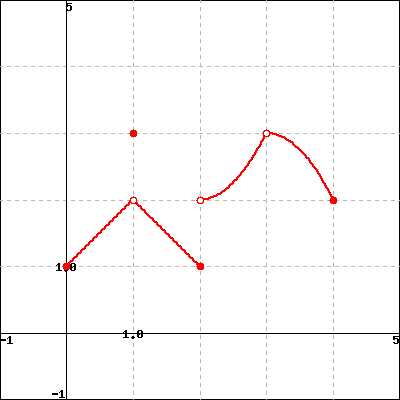

Section2.4Derivatives of other trigonometric functions
Motivating Questions
What are the derivatives of the tangent, cotangent, secant, and cosecant functions?
How do the derivatives of \(\tan(x)\text{,}\)\(\cot(x)\text{,}\)\(\sec(x)\text{,}\) and \(\csc(x)\) combine with other derivative rules we have developed to expand the library of functions we can quickly differentiate?
One of the powerful themes in trigonometry comes from a very simple idea: locating a point on the unit circle.
Figure2.4.1.The unit circle and the definition of the sine and cosine functions.
Because each angle \(\theta\) in standard position corresponds to one and only one point \((x,y)\) on the unit circle, the \(x\)- and \(y\)-coordinates of this point are each functions of \(\theta\text{.}\) In fact, this is the very definition of \(\cos(\theta)\) and \(\sin(\theta)\text{:}\)\(\cos(\theta)\) is the \(x\)-coordinate of the point on the unit circle corresponding to the angle \(\theta\text{,}\) and \(\sin(\theta)\) is the \(y\)-coordinate. From this simple definition, all of trigonometry is founded. For instance, the Fundamental Trigonometric Identity,
is a restatement of the Pythagorean Theorem, applied to the right triangle shown in Figure 2.4.1.
There are four other trigonometric functions, each defined in terms of the sine and/or cosine functions.
The tangent function is defined by \(\tan(\theta) = \frac{\sin(\theta)}{\cos(\theta)}\text{;}\)
the cotangent function is its reciprocal: \(\cot(\theta) = \frac{\cos(\theta)}{\sin(\theta)}\text{.}\)
The secant function is the reciprocal of the cosine function, \(\sec(\theta) = \frac{1}{\cos(\theta)}\text{;}\)
and the cosecant function is the reciprocal of the sine function, \(\csc(\theta) = \frac{1}{\sin(\theta)}\text{.}\)
These six trigonometric functions together offer us a wide range of flexibility in problems involving right triangles.
Because we know the derivatives of the sine and cosine function, we can now develop shortcut differentiation rules for the tangent, cotangent, secant, and cosecant functions. In this section’s preview activity, we work through the steps to find the derivative of \(y = \tan(x)\text{.}\)
Preview Activity2.4.1.
Consider the function \(f(x) = \tan(x)\text{,}\) and remember that \(\tan(x) = \frac{\sin(x)}{\cos(x)}\text{.}\)
What is the domain of \(f\text{?}\)
Use the quotient rule to show that one expression for \(f'(x)\) is
What is the Fundamental Trigonometric Identity? How can this identity be used to find a simpler form for \(f'(x)\text{?}\)
Recall that \(\sec(x) = \frac{1}{\cos(x)}\text{.}\) How can we express \(f'(x)\) in terms of the secant function?
For what values of \(x\) is \(f'(x)\) defined? How does this set compare to the domain of \(f\text{?}\)
Subsection2.4.1Derivatives of the cotangent, secant, and cosecant functions
In Preview Activity 2.4.1, we found that the derivative of the tangent function can be expressed in several ways, but most simply in terms of the secant function. Next, we develop the derivative of the cotangent function.
Let \(g(x) = \cot(x)\text{.}\) To find \(g'(x)\text{,}\) we observe that \(g(x) = \frac{\cos(x)}{\sin(x)}\) and apply the quotient rule. Hence
By the Fundamental Trigonometric Identity, we see that \(g'(x) = -\frac{1}{\sin^2(x)}\text{,}\) and recalling that \(\csc(x) = \frac{1}{\sin(x)}\text{,}\) it follows that we can express \(g'\) by the rule
Note that neither \(g\) nor \(g'\) is defined when \(\sin(x) = 0\text{,}\) which occurs at every integer multiple of \(\pi\text{.}\) Hence we have the following rule.
Cotangent Function.
For all real numbers \(x\) such that \(x \ne k\pi\text{,}\) where \(k = 0, \pm 1, \pm 2, \ldots\text{,}\)
Notice that the derivative of the cotangent function is very similar to the derivative of the tangent function we discovered in Preview Activity 2.4.1.
Tangent Function.
For all real numbers \(x\) such that \(x \ne \frac{(2k+1)\pi}{2}\text{,}\) where \(k = \pm 1, \pm 2, \ldots\text{,}\)
In the next two activities, we develop the rules for differentiating the secant and cosecant functions.
Activity2.4.2.
Let \(h(x) = \sec(x)\) and recall that \(\sec(x) = \frac{1}{\cos(x)}\text{.}\)
What is the domain of \(h\text{?}\)
Use the quotient rule to develop a formula for \(h'(x)\) that is expressed completely in terms of \(\sin(x)\) and \(\cos(x)\text{.}\)
How can you use other relationships among trigonometric functions to write \(h'(x)\) only in terms of \(\tan(x)\) and \(\sec(x)\text{?}\)
What is the domain of \(h'\text{?}\) How does this compare to the domain of \(h\text{?}\)
Activity2.4.3.
Let \(p(x) = \csc(x)\) and recall that \(\csc(x) = \frac{1}{\sin(x)}\text{.}\)
What is the domain of \(p\text{?}\)
Use the quotient rule to develop a formula for \(p'(x)\) that is expressed completely in terms of \(\sin(x)\) and \(\cos(x)\text{.}\)
How can you use other relationships among trigonometric functions to write \(p'(x)\) only in terms of \(\cot(x)\) and \(\csc(x)\text{?}\)
What is the domain of \(p'\text{?}\) How does this compare to the domain of \(p\text{?}\)
Using the quotient rule we have determined the derivatives of the tangent, cotangent, secant, and cosecant functions, expanding our overall library of functions we can differentiate. Observe that just as the derivative of any polynomial function is a polynomial, and the derivative of any exponential function is another exponential function, so it is that the derivative of any basic trigonometric function is another function that consists of basic trigonometric functions. This makes sense because all trigonometric functions are periodic, and hence their derivatives will be periodic, too.
The derivative retains all of its fundamental meaning as an instantaneous rate of change and as the slope of the tangent line to the function under consideration.
Activity2.4.4.
Answer each of the following questions. Where a derivative is requested, be sure to label the derivative function with its name using proper notation.
Let \(f(x) = 5 \sec(x) - 2\csc(x)\text{.}\) Find the slope of the tangent line to \(f\) at the point where \(x =\frac{\pi}{3}\text{.}\)
Let \(p(z) = z^2\sec(z) - z\cot(z)\text{.}\) Find the instantaneous rate of change of \(p\) at the point where \(z = \frac{\pi}{4}\text{.}\)
Let \(g(r) = \displaystyle \frac{r \sec(r) }{5^r}\text{.}\) Find \(g'(r)\text{.}\)
When a mass hangs from a spring and is set in motion, the object’s position oscillates in a way that the size of the oscillations decrease. This is usually called a damped oscillation. Suppose that for a particular object, its displacement from equilibrium (where the object sits at rest) is modeled by the function
Assume that \(s\) is measured in inches and \(t\) in seconds. Sketch a graph of this function for \(t \ge 0\) to see how it represents the situation described. Then compute \(ds/dt\text{,}\) state the units on this function, and explain what it tells you about the object’s motion. Finally, compute and interpret \(s'(2)\text{.}\)
Subsection2.4.2Summary
The derivatives of the other four trigonometric functions are
Each derivative exists and is defined on the same domain as the original function. For example, both the tangent function and its derivative are defined for all real numbers \(x\) such that \(x \ne \frac{k\pi}{2}\text{,}\) where \(k = \pm 1, \pm 2, \ldots\text{.}\)
The four rules for the derivatives of the tangent, cotangent, secant, and cosecant can be used along with the rules for power functions, exponential functions, and the sine and cosine, as well as the sum, constant multiple, product, and quotient rules, to quickly differentiate a wide range of different functions.
Exercises2.4.3Exercises
1.A sum and product involving \(\tan(x)\).
Let \(F\) be the function below.
If you are having a hard time seeing the picture clearly, click on the picture. It will expand to a larger picture on its own page so that you can inspect it more clearly.

Evaluate each of the following expressions.
Note: Enter ’DNE’ if the limit does not exist or is not defined.
a) \(\displaystyle \lim_{x \to -1^-} F(x)\) =
\(\displaystyle \lim_{x \to -1^+} F(x)\) =
\(\displaystyle \lim_{x \to -1} F(x)\) =
\(F(-1)\) =
b) \(\displaystyle \lim_{x \to 1^-} F(x)\) =
\(\displaystyle \lim_{x \to 1^+} F(x)\) =
\(\displaystyle \lim_{x \to 1} F(x)\) =
\(F(1)\) =
c) \(\displaystyle \lim_{x \to 3^-} F(x)\) =
\(\displaystyle \lim_{x \to 3^+} F(x)\) =
\(\displaystyle \lim_{x \to 3} F(x)\) =
\(F(3)\) =
2.A quotient involving \(\tan(t)\).
For the function
\begin{equation*}
f(x) = \begin{cases} x^2 - 5, \amp 0\le x \lt 1\\ 4, \amp x = 1\\ 2 x - 6, \amp 1 \lt x \end{cases}
\end{equation*}
use algebra to find each of the following limits:
\(\lim\limits_{x\to 1^{+}}\, f(x) =\)
\(\lim\limits_{x\to 1^{-}}\, f(x) =\)
\(\lim\limits_{x\to 1}\, f(x) =\)
(For each, enter DNE if the limit does not exist.)
Sketch a graph of \(f(x)\) to confirm your answers.
3.A quotient of trigonometric functions.
Use the given graph of the function to find the \(x\)-values for which \(f\) is discontinuous.
Answer (separate by commas): \(x =\)
Note: You can click on the graph to enlarge the image.
4.A quotient that involves a product.
Consider the function graphed below.
At what \(x\)-values does the function appear to not be continuous? \(x =\)
At what \(x\)-values does the function appear to not be differentiable? \(x =\)
(Enter none if there are no \(x\)-values that apply; enter \(x\)-values as a comma-separated list, e.g., 1,3,5.)
5.Finding a tangent line equation.
If possible, choose \(k\) so that the following function is continuous on any interval:
\begin{equation*}
f(x)= \begin{cases} \frac{4x^{3}-8x^{2}}{x-2}\quad \amp x \ne 2 \\
k \amp x = 2. \end{cases}
\end{equation*}
\(k =\)
(If no k will make the function continuous, enter none)
6.
An object moving vertically has its height at time \(t\) (measured in feet, with time in seconds) given by the function \(h(t) = 3 + \frac{2\cos(t)}{1.2^t}\text{.}\)
What is the object’s instantaneous velocity when \(t =2\text{?}\)
What is the object’s acceleration at the instant \(t = 2\text{?}\)
Describe in everyday language the behavior of the object at the instant \(t = 2\text{.}\)
7.
Let \(f(x) = \sin(x) \cot(x)\text{.}\)
Use the product rule to find \(f'(x)\text{.}\)
True or false: for all real numbers \(x\text{,}\)\(f(x) = \cos(x)\text{.}\)
Explain why the function that you found in (a) is almost the opposite of the sine function, but not quite. (Hint: convert all of the trigonometric functions in (a) to sines and cosines, and work to simplify. Think carefully about the domain of \(f\) and the domain of \(f'\text{.}\))